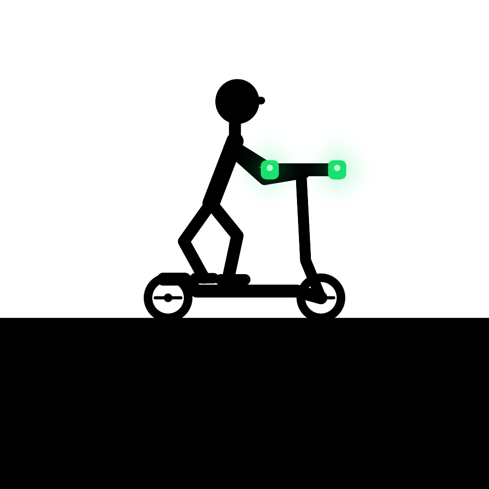

Electric / Endless run
タップで跳んで、
どこまでも。
大きな崖も、小さな足場も。
電動キックボードで駆け抜けて、
自分の最高記録を更新しよう。

01 / JUMP2回のタップで、
2回のタップで、
もうひと跳び。
空中でもう一度タップすれば2段ジャンプ。大きな崖を見きわめて、次の足場へ。
02 / KEEP GOING連続する崖も、
連続する崖も、
高低差も。
先の足場を見渡し、連続する崖をジャンプ。短い足場や高低差のある着地点へ、タイミングよく飛び移りましょう。
03 / SPEED速い走りで、
速い走りで、
記録に挑戦。
速いペースで駆け抜け、最高記録に挑戦。タップのタイミングを合わせて、次の足場へ跳びましょう。
遊びかた・お問い合わせ
操作のヒントや、よくある質問はこちら。